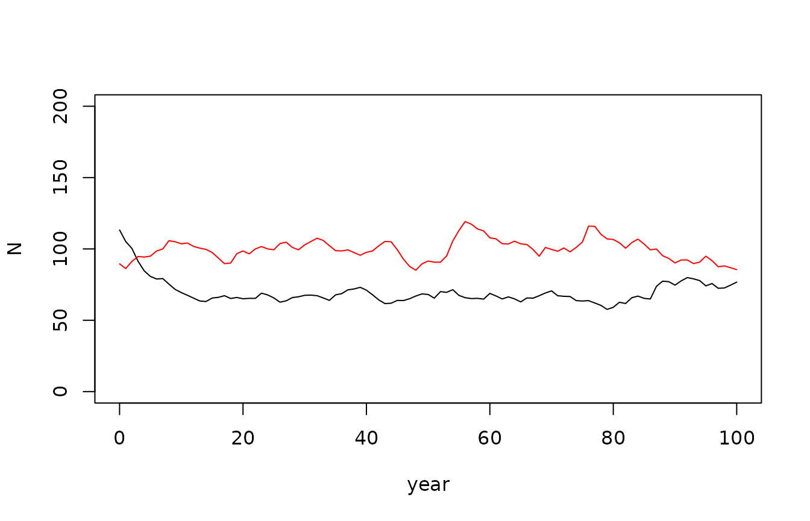
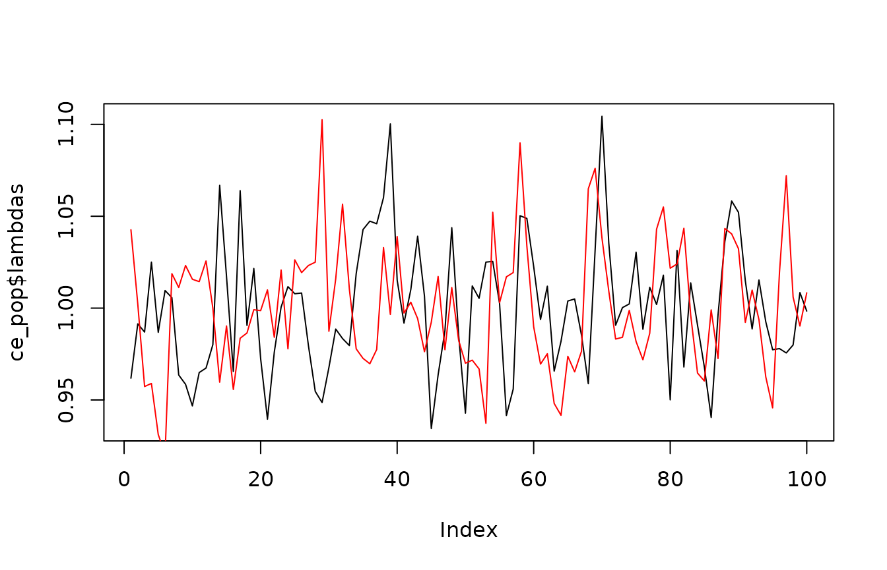

3. Population Model Overview
2024-09-27
a03-population-model.RmdOverview
This tutorial covers the population model component of the
CEMPRA r-package. The population model is included as an
extension to the original Joe Model and leverages a flexible
stage-structured population modelling framework that can be modified for
different target systems. The underlying population model code was
originally developed by van der Lee and Koops (2020)1 and then further
modified by Dr. Kyle Wilson
to incorporate environmental stressors that are linked to survivorship,
capacity and growth.
Input parameters
The inputs for the population model include key parameters defined in
the life_cycles.csv input file. Users can adjust and modify
these values to represent a species of interest or run the model with
the default values (currently representing the life history traits for
Westslope Cuttroat Trout). These parameters can be modified such that
the population model represents a target species of interest. The
example below shows life history parameters that will be used to build
the stage-structured population matrix model. For a detailed description
of the underlying mechanisms of the population model refer the the CEMPRA User Guide
van der Lee and Koops (2020).
# Install the CEMPRA (first-time users)
# library(devtools)
# devtools::install_github("essatech/CEMPRA")
# Load the CEMPRA package.
library(CEMPRA)
filename_lc <- system.file("extdata", "life_cycles.csv", package = "CEMPRA")
life_cycles <- read.csv(filename_lc)
print(life_cycles)
#> Parameters Name Value
#> 1 Number of life stages Nstage 4.0
#> 2 Adult capacity k 100.0
#> 3 Spawn events per female events 1.0
#> 4 Eggs per female spawn eps 3000.0
#> 5 spawning interval int 1.0
#> 6 egg survival SE 0.1
#> 7 yoy survival S0 0.3
#> 8 sex ratio SR 0.5
#> 9 Hatchling Survival surv_1 0.3
#> 10 Juvenile Survival surv_2 0.3
#> 11 Sub-adult Survival surv_3 0.9
#> 12 Adult Survival surv_4 0.9
#> 13 Years as hatchling year_1 1.0
#> 14 years as juvenile year_2 2.0
#> 15 years as subadult year_3 2.0
#> 16 years as adult year_4 5.0
#> 17 egg survival compensation ratio cr_E 1.0
#> 18 yoy survival compensation ratio cr_0 3.0
#> 19 hatchling survival compensation ratio cr_1 2.5
#> 20 juvenile survival compensation ratio cr_2 2.0
#> 21 subadult survival compensation ratio cr_3 1.1
#> 22 adult survival compensation ratio cr_4 1.0
#> 23 maturity as hatchling mat_1 0.0
#> 24 maturity as juvenile mat_2 0.0
#> 25 maturity as subadult mat_3 0.0
#> 26 maturity as adult mat_4 1.0
#> 27 variance in eggs per female eps_sd 1000.0
#> 28 correlation in egg fecundity through time egg_rho 0.1
#> 29 coefficient of variation in stage-specific mortality M.cv 0.1
#> 30 correlation in mortality through time M.rho 0.1Setup the matrix
pop_model_setup() and
pop_model_matrix_elements() are run first to build the
elements needed to run the full population matrix model. You can explore
the data objects generated from these functions which include some
density-independent components of a matrix model. Below we can see the
transition matrix.
# Setup objects for population model
pop_mod_setup <- pop_model_setup(life_cycles = life_cycles)
# Build matrix elements for population model
pop_mod_mat <- pop_model_matrix_elements(pop_mod_setup = pop_mod_setup)
#> [1] "Running with S0 adjusted to s0.1.det..."
names(pop_mod_mat)
#> [1] "projection_matrix" "life_histories" "life_stages_symbolic"
#> [4] "density_stage_symbolic" "anadrmous"
print(pop_mod_mat$projection_matrix)
#> [,1] [,2] [,3] [,4]
#> [1,] 0.0 0.00000000 0.0000000 45.0000000
#> [2,] 0.3 0.23076923 0.0000000 0.0000000
#> [3,] 0.0 0.06923077 0.4736842 0.0000000
#> [4,] 0.0 0.00000000 0.4263158 0.7558057Calculate simple matrix elements from the popbio package
Running the next block of code is optional, but it is included for
demonstration purposes to highlight how we can use functions from the
external popbio R package to generate simple matrix
elements from an eigne analysis (e.g., lambda values, sensitivities and
elasticities etc). Note that these elements consider density-independent
growth. In the next section we project the population forward while
accounting for density-dependent growth.
# Preview density-independent transition projection_matrix
A <- pop_mod_mat$projection_matrix
# Assign nicknames for each stage
# snames <- c("egg_yoy", "juv", "subadult", "adult")
# rownames(A) <- colnames(A) <- snames
# Simple density-independent lambda estimate
popbio::lambda(A)
#> [1] 1.211018
# Simple Eigen analysis
popbio::eigen.analysis(A)$elasticities
#> [,1] [,2] [,3] [,4]
#> [1,] 0.0000000 0.0000000 0.00000000 0.1529476
#> [2,] 0.1529476 0.0360068 0.00000000 0.0000000
#> [3,] 0.0000000 0.1529476 0.09825795 0.0000000
#> [4,] 0.0000000 0.0000000 0.15294763 0.2539447Density-dependent time series population projections
Project the population forward through time with density-dependent
constraints applied. Density-dependence acts on all life stages and is
structured as a Beverton-Holt relationship. Compensatory
density-dependence is applied and back-calculated solving an equation
that sets the global lambda value to 1. The projection runs with
stochasticity and naturally hovers around the Adult capacity (K) value.
See van der Lee and Koops (2020) for additional details. Note that at
this point we are not considering any stressors as the cumulative effect
dataframe (CE_df) is set to NULL.
# Set the K.adj (K adjustment prior to pop model run)
life_histories <- pop_mod_mat$life_histories
# Mathematical expression of the transition matrix
life_stages_symbolic <- pop_mod_mat$life_stages_symbolic
# Mathematical expression of the density matrix
density_stage_symbolic <- pop_mod_mat$density_stage_symbolic
# Run simple population projection - project forward through time
baseline <-
Projection_DD(
M.mx = life_stages_symbolic,
# projection matrix expression
D.mx = density_stage_symbolic,
# density-dependence matrix
H.mx = NULL,
dat = life_histories,
# life history data
K = life_histories$Ka,
# initial pop size as stage-structure vector
Nyears = 100,
# years to run simulation
p.cat = 0, # Probability of catastrophe
CE_df = NULL
)
names(baseline)
#> [1] "pop" "N" "lambdas" "vars" "Cat."
# Time series of the population
plot(baseline$pop, type = 'l')
# Time series of lambda values
plot(baseline$lambdas, type = 'l', ylab = "lambda", xlab = "year")Population Projections with CE Stressors
Then re-run the population model projections, but this time add on
environmental stressors. Note that in this simple example two imaginary
stressors are added CE_df1 and CE_df2 with
fake data. These stressors target fry capacity and juvenile survival,
respectively. The first stressor (My Stressor1) reduces the
fry carrying capacity by 18% (0.82) and the second stressor decreases
the fry survival by 20% (0.80).
# Very simple CE data frame of one watershed
# and two stressors (My Stressor1, My Stressor2)
CE_df1 <- data.frame(HUC = 123,
Stressor = "My Stressor1",
dose = 123, # Stressor magnitude
sys.cap = 0.82, # Effect of vital rate (dose:response)
life_stage = "fry_parr",
parameter = "capacity",
Stressor_cat = "My Stressor1")
# Second stressor - fake data
CE_df2 <- data.frame(HUC = 123,
Stressor = "My Stressor2",
dose = 123,
sys.cap = 0.80,
life_stage = "all_juv",
parameter = "survival",
Stressor_cat = "My Stressor2")
# Stressors dataframe
CE_df <- rbind(CE_df1, CE_df2)Rerun the population model. Note the plots below the red line is the baseline and the black line is the population projection run with stressors included. In each example the population is suppressed when the stressors are included.
ce_pop <- Projection_DD(M.mx = life_stages_symbolic,
D.mx = density_stage_symbolic,
H.mx = NULL,
dat = life_histories,
K = life_histories$Ka,
Nyears = 100,
p.cat = 0,
CE_df = CE_df
)
# Time series of the population with CE
plot(ce_pop$pop, type = 'l', ylim = c(0, 200), col = "red")
points(baseline$pop, type = 'l', col = "black")
legend("topright", legend = c("With CE", "Baseline"), col = c("red", "black"), lwd = 2)
# Time series of lambda values
plot(ce_pop$lambdas, type = 'l', col = "red")
points(baseline$lambdas, type = 'l', col = "black")